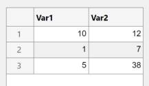
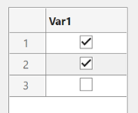
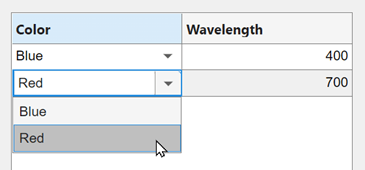
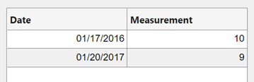
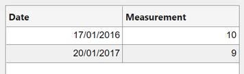
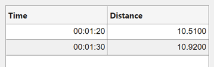
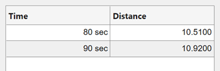
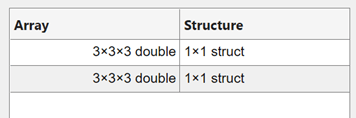
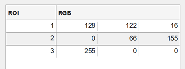
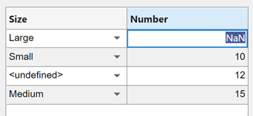

Format Tabular Data in Apps
Table arrays are useful for storing tabular data as MATLAB® variables. For example, you can call the readtable function to
create a table array from a spreadsheet. You can use a
Table UI component to display table array data in
apps and to take advantage of interactive editing features for certain data
types. Only App Designer apps and figures created with the uifigure function
support using table arrays in a Table UI
component.
If you are using App Designer to display tabular data, first create a
Table UI component in Design
View. Then, use the examples on this page to format the
data and to set properties of the Table UI component in
Code View. For more information about using
tables in App Designer, see Add Tables to App Designer Apps.
To see a fully coded example app that uses some of these data types in a table component, see Create Interactive Table in an App.
Numeric Data
In a Table UI component, numeric data displays as
right-justified values.
fig = uifigure; tdata = table([10; 1; 5],[12; 7; 38]); uit = uitable(fig,'Data',tdata); uit.Position(3) = 200; uit.RowName = 'numbered';

Logical Data
Logical values display as check boxes. true values
are checked, whereas false values are unchecked.
When the ColumnEditable property of the
Table UI component is
true, the user can select and clear the
check boxes in the app.
fig = uifigure; tdata = table([true; true; false]); uit = uitable(fig,'Data',tdata); uit.Position(3) = 130; uit.RowName = 'numbered';

Categorical Data
categorical values can appear as drop-down lists or
as text. The categories appear in drop-down lists when the
ColumnEditable property of the
Table UI component is
true. Otherwise, the categories display
as text without a drop-down list.
fig = uifigure;
cnames = categorical({'Blue';'Red'},{'Blue','Red'});
w = [400; 700];
tdata = table(cnames,w,'VariableNames',{'Color','Wavelength'});
uit = uitable(fig,'Data',tdata,'ColumnEditable',true);

If the categorical array is not protected, users
can add new categories in the running app by typing in the
cell.
Datetime Data
datetime values display according to the
Format property of the corresponding
table variable (a datetime array).
fig = uifigure; dates = datetime([2016,01,17; 2017,01,20],'Format','MM/dd/uuuu'); m = [10; 9]; tdata = table(dates,m,'VariableNames',{'Date','Measurement'}); uit = uitable(fig,'Data',tdata);

To change the format, use dot notation to set the
Format property of the table variable.
Then, replace the data in the Table UI component.
tdata.Date.Format = 'dd/MM/uuuu';
uit.Data = tdata;
When the ColumnEditable property of the
Table UI component is
true, users can change date values in the
app. When the column is editable, the app expects input values that
conform to the Format property of the
datetime array. If the user enters an
invalid date, the value displayed in the table is
NaT.
Duration Data
duration values display according to the
Format property of the corresponding
table variable (a duration array).
fig = uifigure; mtime = duration([0;0],[1;1],[20;30]); dist = [10.51; 10.92]; tdata = table(mtime,dist,'VariableNames',{'Time','Distance'}); uit = uitable(fig,'Data',tdata);

To change the format, use dot notation to set the
Format property of the table variable.
tdata.Time.Format = 's';
uit.Data = tdata;
Cells containing duration values are not editable
in the running app, even when ColumnEditable of
the Table UI component is
true.
Nonscalar Data
Nonscalar values display in the app the same way as they display in
the Command Window. For example, this table array contains 3-D
arrays and struct arrays.
fig = uifigure;
arr = {rand(3,3,3); rand(3,3,3)};
s = {struct; struct};
tdata = table(arr,s,'VariableNames',{'Array','Structure'});
uit = uitable(fig,'Data',tdata);
A multicolumn table array variable displays as a combined column in
the app, just as it does in the Command Window. For example, the
RGB variable in this table array is a
3-by-3
array.
n = [1;2;3]; rgbs = [128 122 16; 0 66 155; 255 0 0]; tdata = table(n,rgbs,'VariableNames',{'ROI','RGB'})
tdata =
3×2 table
ROI RGB
___ _________________
1 128 122 16
2 0 66 155
3 255 0 0The Table UI component provides a similar
presentation. Selecting an item in the RGB column
selects all the subcolumns in that row. The values in the subcolumns
are not editable in the running app, even when
ColumnEditable property of the
Table UI component is
true.
fig = uifigure;
uit = uitable(fig,'Data',tdata);
Missing Data Values
Missing values display as indicators according to the data type:
Missing strings display as
<missing>.Undefined
categoricalvalues display as<undefined>.Invalid or undefined numbers or
durationvalues display asNaN.Invalid or undefined
datetimevalues display asNaT.
If the ColumnEditable property
of the Table UI component is
true, then the user can correct the
values in the running app.
fig = uifigure;
sz = categorical([1; 3; 4; 2],1:3,{'Large','Medium','Small'});
num = [NaN; 10; 12; 15];
tdata = table(sz,num,'VariableNames',{'Size','Number'});
uit = uitable(fig,'Data',tdata,'ColumnEditable',true);